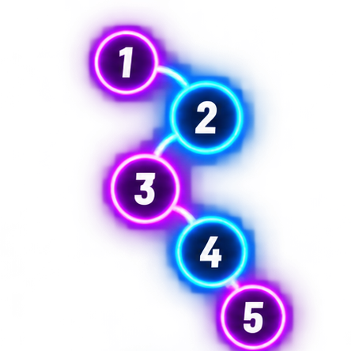
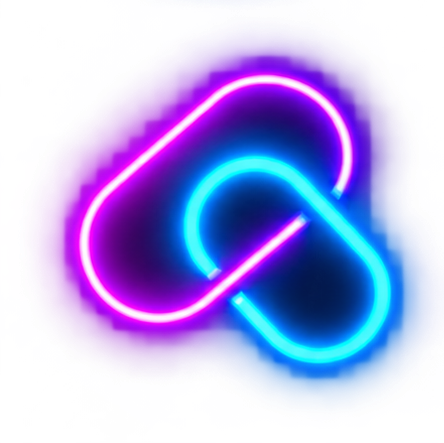
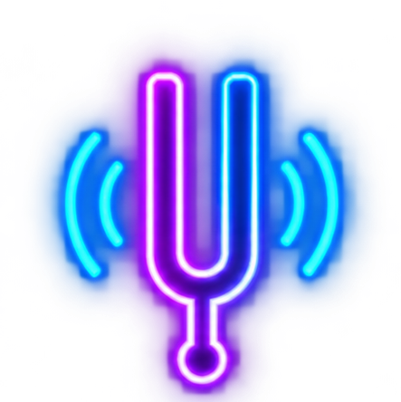
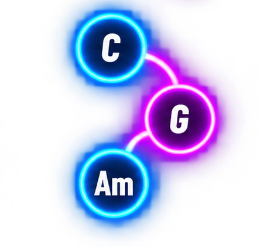

Une routine.De vrais progrès.
Progressez à l’ukulélé, une routine après l’autre.

Jouez avecassurance.
Repérez-vous sur le manche avec des triades simples.
Reliez lescinq positions.
Connectez les cinq positions pentatoniques sur tout le manche.

Jouez.Le micro vous suit.
Jouez les notes et les accords. Le micro vous guide en direct.
Testez vosconnaissances.
Relevez le défi : retrouvez les notes en 60 secondes.
Accordez.À vous de jouer.
Accordez votre ukulélé avec l’accordeur intégré.

Maîtrisezvotre manche.
Repérez chaque note. Sachez où la jouer.
Comprenezl’harmonie.
Découvrez les liens entre les tonalités et les accords.
